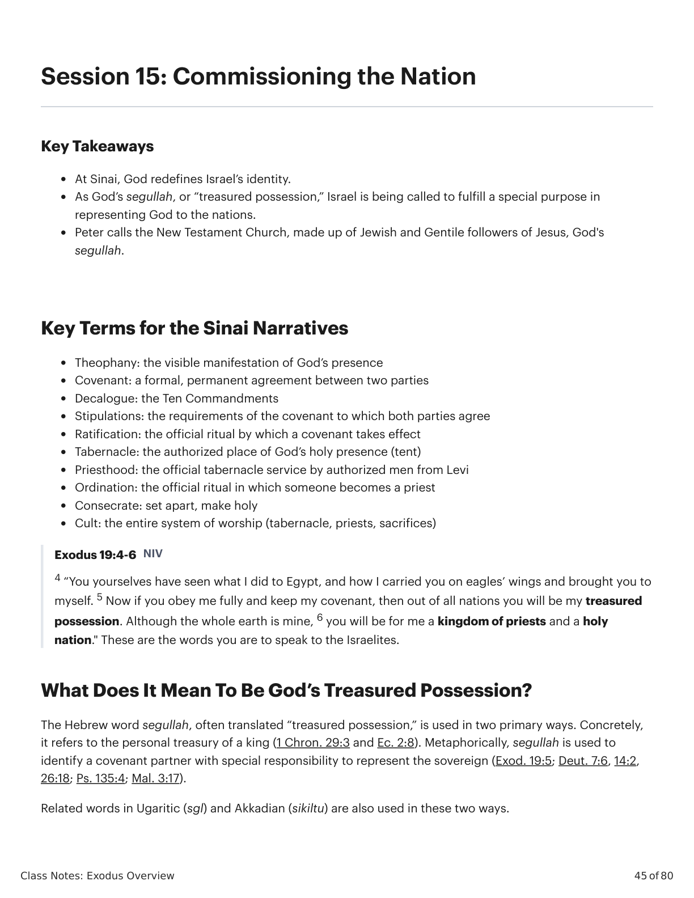
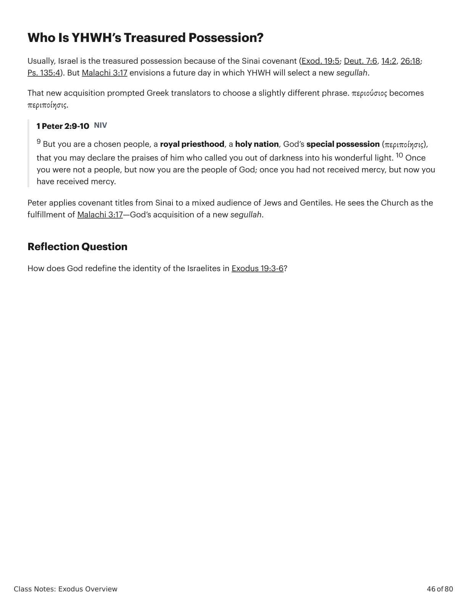

Sessão 15: Commissioning the NationSession 15: Commissioning the Nation
\n
\n
Class Notes: Exodus Overview
45 of 80
Session 15: Commissioning the Nation
Key Takeaways
At Sinai, God redefines Israel’s identity.
As God’s segullah, or “treasured possession,” Israel is being called to fulfill a special purpose in
representing God to the nations.
Peter calls the New Testament Church, made up of Jewish and Gentile followers of Jesus, God's
segullah.
Key Terms for the Sinai Narratives
Theophany: the visible manifestation of God’s presence
Covenant: a formal, permanent agreement between two parties
Decalogue: the Ten Commandments
Stipulations: the requirements of the covenant to which both parties agree
Ratification: the official ritual by which a covenant takes effect
Tabernacle: the authorized place of God’s holy presence (tent)
Priesthood: the official tabernacle service by authorized men from Levi
Ordination: the official ritual in which someone becomes a priest
Consecrate: set apart, make holy
Cult: the entire system of worship (tabernacle, priests, sacrifices)
Exodus 19:4-6 NIV
4 “You yourselves have seen what I did to Egypt, and how I carried you on eagles’ wings and brought you to
myself. 5 Now if you obey me fully and keep my covenant, then out of all nations you will be my treasured
possession. Although the whole earth is mine, 6 you will be for me a kingdom of priests and a holy
nation." These are the words you are to speak to the Israelites.
What Does It Mean To Be God’s Treasured Possession?
The Hebrew word segullah, often translated “treasured possession,” is used in two primary ways. Concretely,
it refers to the personal treasury of a king (1 Chron. 29:3 and Ec. 2:8). Metaphorically, segullah is used to
identify a covenant partner with special responsibility to represent the sovereign (Exod. 19:5; Deut. 7:6, 14:2,
26:18; Ps. 135:4; Mal. 3:17).
Related words in Ugaritic (sgl) and Akkadian (sikiltu) are also used in these two ways.
\n

Êxodo X:Y. Tradução e Design Literário por Tim Mackie para BibleProject Classroom: José (2021).Exodus X:Y. Translation and Literary Design by Tim Mackie for BibleProject Classroom: Joseph (2021).
\n
Class Notes: Exodus Overview
46 of 80
Who Is YHWH’s Treasured Possession?
Usually, Israel is the treasured possession because of the Sinai covenant (Exod. 19:5; Deut. 7:6, 14:2, 26:18;
Ps. 135:4). But Malachi 3:17 envisions a future day in which YHWH will select a new segullah.
That new acquisition prompted Greek translators to choose a slightly different phrase. περιούσιος becomes
περιποίησις.
1 Peter 2:9-10 NIV
9 But you are a chosen people, a royal priesthood, a holy nation, God’s special possession (περιποίησις),
that you may declare the praises of him who called you out of darkness into his wonderful light. 10 Once
you were not a people, but now you are the people of God; once you had not received mercy, but now you
have received mercy.
Peter applies covenant titles from Sinai to a mixed audience of Jews and Gentiles. He sees the Church as the
fulfillment of Malachi 3:17—God’s acquisition of a new segullah.
Reflection Question
How does God redefine the identity of the Israelites in Exodus 19:3-6?
\n

Êxodo X:Y. Tradução e Design Literário por Tim Mackie para BibleProject Classroom: José (2021).Exodus X:Y. Translation and Literary Design by Tim Mackie for BibleProject Classroom: Joseph (2021).
\n